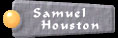

|  |
A Tribute to President Samuel Houston General Samuel Houston was a great
advocate of Texas Independence, he organized the seats of
democracy and later defended its freedom during the war
with Mexican General Santa Anna. Santa Anna was later
captured during the Texas victory at San Jacinto and
brought before General Samuel Houston on April 23, 1836.
After the war General Samuel Houston was elected
the first official President of the Republic of Texas.
The President Samuel Houston commemorative coin is
an extraordinary masterpeice that combines Texas History
with two precious metals. The Gold Select process
is achieved by selectively applying 24K gold to one troy
ounce of .999 fine silver with extreme precision. |
||||||||
The obverse design of the coin honors and commemorates the first official President of the Republic of Texas. Order Now |
|||||||||
The reverse displays the six flags that have flown over Texas. The Spanish, French, Mexican, Confederate, Texas Republic, and the United States flags are shown over the beautiful and historic State Capital Building between the oak and olive branches. The Lone Star proudly sits over the Alamo which serves to complete the qoute by General Samuel Houston "Remember the Alamo and Goliad." Order Now |
|||||||||
|
|||||||||
| A numbered certificate of Authenticity comes with each coin and is appropriately displayed in a velvet jewelry case befitting its value. | |||||||||
{kind=link}
{kind=link}